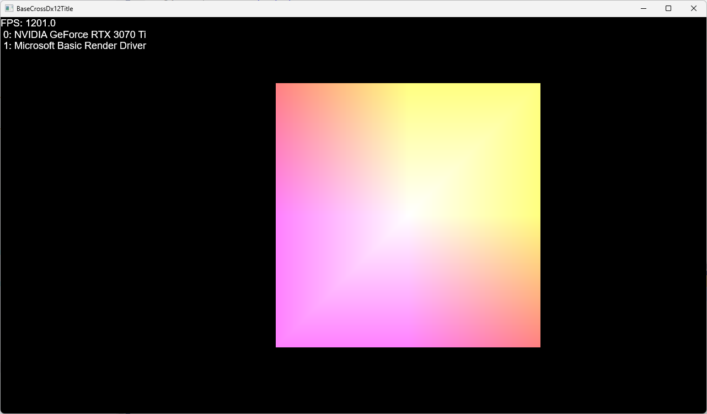

class Scene : public BaseScene
{
shared_ptr<Stage> m_activeStage;
public:
Scene(UINT frameCount, PrimDevice* pPrimDevice);
virtual ~Scene();
protected:
virtual void CreateAssetResources(ID3D12Device* pDevice, ID3D12GraphicsCommandList* pCommandList)override;
virtual void CreatePipelineStates(ID3D12Device* pDevice)override;
virtual void UpdateConstantBuffers()override {}
virtual void CommitConstantBuffers()override {}
virtual void Update(double elapsedTime)override;
virtual void ShadowPass(ID3D12GraphicsCommandList* pCommandList)override;
virtual void ScenePass(ID3D12GraphicsCommandList* pCommandList)override;
virtual void UpdateUI(std::unique_ptr<UILayer>& uiLayer)override;
};
shared_ptr<Stage> m_activeStage;というのはステージです。GameStageクラスが設定されます。
void Scene::CreateAssetResources(ID3D12Device* pDevice, ID3D12GraphicsCommandList* pCommandList)
{
m_pTgtCommandList = pCommandList;
m_activeStage = ObjectFactory::Create<GameStage>(pDevice);
}
ObjectFactory::Create()テンプレート関数はObjectInterfaceクラスを親に持つ派生クラスを作成するときに使います。内部ではインスタンスを構築して、OnCreate関数を呼び出します。ここではGameStageクラスを構築しています。
void Scene::CreatePipelineStates(ID3D12Device* pDevice) {
// シャドウマップ用パイプラインステート
{
ComPtr<ID3D12PipelineState> PNTShadowmapPipelineState
= PipelineStatePool::GetPipelineState(L"PNTShadowmap");
//中略
if (!PNTShadowmapPipelineState) {
ThrowIfFailed(pDevice->CreateGraphicsPipelineState(&psoDesc, IID_PPV_ARGS(&PNTShadowmapPipelineState)));
NAME_D3D12_OBJECT(PNTShadowmapPipelineState);
PipelineStatePool::AddPipelineState(L"PNTShadowmap", PNTShadowmapPipelineState);
}
}
// シーン用パイプラインステート
{
ComPtr<ID3D12PipelineState> PNTPipelineState
= PipelineStatePool::GetPipelineState(L"BcPNTStaticShadow");
//中略
if (!PNTPipelineState) {
ThrowIfFailed(pDevice->CreateGraphicsPipelineState(&psoDesc, IID_PPV_ARGS(&bcPNTStaticShadowPipelineState)));
NAME_D3D12_OBJECT(bcPNTStaticShadowPipelineState);
PipelineStatePool::AddPipelineState(L"BcPNTStaticShadow", bcPNTStaticShadowPipelineState);
}
}
}
中略のところはソースコードを確認ください。
void Scene::Update(double elapsedTime) {
if (m_activeStage) {
m_activeStage->OnUpdate(elapsedTime);
m_activeStage->OnUpdate2(elapsedTime);
UpdateConstantBuffers();
CommitConstantBuffers();
}
}
ステージのOnUpdate()関数とOnUpdate2()関数を呼び出していますが、これは、それぞれのオブジェクトに2回、更新の機会を与えるためです。複数のオブジェクトを配置している場合、OnUpdate()関数で位置とかを変化させ、その結果としてほかのオブジェクトとのかかわりによっては何か動きに修正をかけたりするときにOnUpdate2()関数を使用します。
void Scene::UpdateConstantBuffers() {
if (m_activeStage) {
m_activeStage->OnUpdateConstantBuffers();
}
}
void Scene::CommitConstantBuffers() {
if (m_activeStage) {
m_activeStage->OnCommitConstantBuffers();
}
}
void Scene::ShadowPass(ID3D12GraphicsCommandList* pCommandList) {
// Set necessary state.
auto rootSignature = RootSignaturePool::GetRootSignature(L"BaseCrossDefault", true);
pCommandList->SetGraphicsRootSignature(rootSignature.Get());
//PipelineState
auto shadowPipeline = PipelineStatePool::GetPipelineState(L"PNTShadowmap", true);
pCommandList->SetPipelineState(shadowPipeline.Get());
pCommandList->IASetPrimitiveTopology(D3D_PRIMITIVE_TOPOLOGY_TRIANGLELIST);
pCommandList->RSSetViewports(1, &m_viewport);
pCommandList->RSSetScissorRects(1, &m_scissorRect);
// No render target needed for the shadow pass.
pCommandList->OMSetRenderTargets(0, nullptr, FALSE, &m_depthDsvs[DepthGenPass::Shadow]);
if (m_activeStage) {
m_pTgtCommandList = pCommandList;
m_activeStage->OnShadowDraw();
}
}
void Scene::ScenePass(ID3D12GraphicsCommandList* pCommandList)
{
auto& viewport = GetViewport();
auto& scissorRect = GetScissorRect();
auto depthDsvs = GetDepthDsvs();
// Set necessary state.
auto rootSignature = RootSignaturePool::GetRootSignature(L"BaseCrossDefault", true);
pCommandList->SetGraphicsRootSignature(rootSignature.Get());
pCommandList->IASetPrimitiveTopology(D3D_PRIMITIVE_TOPOLOGY_TRIANGLELIST);
pCommandList->RSSetViewports(1, &viewport);
pCommandList->RSSetScissorRects(1, &scissorRect);
//t0: DepthGenPass::Shadow
pCommandList->SetGraphicsRootDescriptorTable(GetGpuSlotID(L"t0"), m_depthSrvGpuHandles[DepthGenPass::Shadow]);
// Set the shadow texture as an SRV.
pCommandList->OMSetRenderTargets(1, &GetCurrentBackBufferRtvCpuHandle(), FALSE, &depthDsvs[DepthGenPass::Scene]);
//PipelineState
auto scenePipelineState = PipelineStatePool::GetPipelineState(L"BcPNTStaticShadow", true);
pCommandList->SetPipelineState(scenePipelineState.Get());
//Sampler
UINT index = GetSamplerIndex(L"LinearClamp");
if (index == UINT_MAX) {
throw BaseException(
L"LinearClampサンプラーが特定できません。",
L"Scene::ScenePass()"
);
}
CD3DX12_GPU_DESCRIPTOR_HANDLE samplerHandle(
GetSamplerDescriptorHeap()->GetGPUDescriptorHandleForHeapStart(),
index,
GetSamplerDescriptorHandleIncrementSize()
);
pCommandList->SetGraphicsRootDescriptorTable(GetGpuSlotID(L"s0"), samplerHandle);
index = GetSamplerIndex(L"ComparisonLinear");
if (index == UINT_MAX) {
throw BaseException(
L"ComparisonLinearサンプラーが特定できません。",
L"Scene::ScenePass()"
);
}
CD3DX12_GPU_DESCRIPTOR_HANDLE samplerHandle2(
GetSamplerDescriptorHeap()->GetGPUDescriptorHandleForHeapStart(),
index,
GetSamplerDescriptorHandleIncrementSize()
);
pCommandList->SetGraphicsRootDescriptorTable(GetGpuSlotID(L"s1"), samplerHandle2);
if (m_activeStage) {
m_pTgtCommandList = pCommandList;
m_activeStage->OnSceneDraw();
}
}
Scene::UpdateUI()関数に関しては、前項同様です。
class GameStage : public Stage {
protected:
shared_ptr<PerspecCamera> m_myCamera;
shared_ptr<LightSet> m_myLightSet;
public:
GameStage(ID3D12Device* pDevice):
Stage(pDevice)
{}
virtual ~GameStage() {}
//アクセサ
std::shared_ptr<PerspecCamera> GetMyCamera() const {
return m_myCamera;
}
std::shared_ptr<LightSet> GetLightSet() const {
return m_myLightSet;
}
virtual void OnCreate()override;
};
いたってシンプルなヘッダです。というのは多くの処理は親クラスのStageクラスが行っています。
void GameStage::OnCreate() {
m_myCamera = shared_ptr<PerspecCamera>(new PerspecCamera());
m_myLightSet = shared_ptr<LightSet>(new LightSet());
TransParam param;
param.scale = Vec3(1.0f, 1.0f, 1.0f);
param.rotOrigin = Vec3(0.0f, 0.0f, 0.0f);
auto quat = XMQuaternionIdentity();
param.quaternion = bsm::Quat(quat);
param.position = Vec3(0.0f, 5.0f, 0.0f);
AddGameObject<WallBox>(param);
param.scale = Vec3(50.0f, 1.0f, 50.0f);
param.position = Vec3(0.0f, -0.5, 0.0f);
AddGameObject<SkyGround>(param);
}
ここでは、土台であるSkyGroundクラスと、くるくる空中で回る物体WallBoxクラスをステージに追加します。
class MyObject : public GameObject {
protected:
BasicConstantBuffer m_constantBuffer;
size_t m_constantBufferIndex;
ShadowConstantBuffer m_shadowConstantBuffer;
size_t m_shadowConstantBufferIndex;
//フォグが有効かどうか
bool m_fogEnabled = true;
//フォグの開始位置
float m_fogStart = -25.0f;
//フォグの終了位置
float m_fogEnd = -40.0f;
//フォグ色
XMFLOAT4 m_fogColor;
//フォグベクトル
XMFLOAT3 m_fogVector;
MyObject(const TransParam& param) :
GameObject(param){
m_fogColor = XMFLOAT4(0.8f, 0.8f, 0.8f, 1.0f);
m_fogVector = XMFLOAT3(0.0, 0.0, 1.0f);
}
virtual ~MyObject() {}
shared_ptr<BaseMesh> m_mesh;
shared_ptr < BaseTexture> m_texture;
public:
virtual void OnUpdateConstantBuffers(Scene* scene, shared_ptr<Stage>& stage)override;
virtual void OnCommitConstantBuffers(Scene* scene, shared_ptr<Stage>& stage)override;
virtual void OnCreate()override;
virtual void OnShadowDraw()override;
virtual void OnSceneDraw()override;
virtual void OnDestroy()override {}
};
ここでは様々なメンバ変数があります。コンスタントバッファを保持するm_constantBuffer、m_shadowConstantBuffer
void MyObject::OnUpdateConstantBuffers(Scene* scene, shared_ptr<Stage>& stage) {
auto& frameResources = scene->GetFrameResources();
auto pBaseDevice = BaseDevice::GetBaseDevice();
auto& viewport = scene->GetViewport();
shared_ptr<PerspecCamera> myCamera;
shared_ptr<LightSet> myLightSet;
auto gameStage = dynamic_pointer_cast<GameStage>(stage);
if (gameStage) {
myCamera = gameStage->GetMyCamera();
myLightSet = gameStage->GetLightSet();
}
else {
return;
}
//シーンのコンスタントバッファ
{
//初期化
m_constantBuffer = {};
m_constantBuffer.activeFlg.x = 3;
m_constantBuffer.activeFlg.y = 1;
//ワールド行列の設定
auto world = XMMatrixAffineTransformation(
m_param.scale,
m_param.rotOrigin,
m_param.quaternion,
m_param.position
);
auto view = (XMMATRIX)((Mat4x4)myCamera->GetViewMatrix());
auto proj = (XMMATRIX)((Mat4x4)myCamera->GetProjMatrix());
auto worldView = world * view;
m_constantBuffer.worldViewProj = Mat4x4(XMMatrixTranspose(XMMatrixMultiply(worldView, proj)));
//中略
}
//シャドウマップのコンスタントバッファ
{
m_shadowConstantBuffer = {};
auto lights = myLightSet;
auto light = lights->GetMainBaseLight();
//位置の取得
Vec3 pos = m_param.position;
Vec3 posSpan = (Vec3)light.m_directional;
posSpan *= Vec3(Shadowmap::GetPosAdjustment());
pos += posSpan;
//ワールド行列の決定
auto param_tmp = m_param;
param_tmp.position = pos;
auto world = XMMatrixAffineTransformation(
param_tmp.scale,
param_tmp.rotOrigin,
param_tmp.quaternion,
param_tmp.position
);
//中略
}
}
ソースコードを見るとわかりますが、かなり長いソースになります。これはこのサンプルのコンスタントバッファが複雑なためで、もっとシンプルにすることも可能です。
void MyObject::OnCommitConstantBuffers(Scene* scene, shared_ptr<Stage>& stage) {
auto pCurrentFrameResource = scene->GetCurrentFrameResource();
//シーン
memcpy(pCurrentFrameResource->m_baseConstantBufferSetVec[m_constantBufferIndex].m_pBaseConstantBufferWO,
&m_constantBuffer, sizeof(m_constantBuffer));
//シャドウマップ
memcpy(pCurrentFrameResource->m_baseConstantBufferSetVec[m_shadowConstantBufferIndex].m_pBaseConstantBufferWO,
&m_shadowConstantBuffer, sizeof(m_shadowConstantBuffer));
}
ここでは、現在のフレームのインデックス、すなわちm_constantBufferIndexとm_shadowConstantBufferIndexに先ほど更新したコンスタントバッファをコピーします。ここで使ってるm_constantBufferIndexとm_shadowConstantBufferIndexは、続いて紹介するMyObject::OnCreate()関数で設定します。
void MyObject::OnCreate() {
ID3D12GraphicsCommandList* pCommandList = BaseScene::Get()->m_pTgtCommandList;
auto pBaseScene = BaseScene::Get();
auto& frameResources = pBaseScene->GetFrameResources();
auto pBaseDevice = BaseDevice::GetBaseDevice();
//デフォルトのコンスタントバッファ
for (size_t i = 0; i < BaseDevice::FrameCount; i++) {
m_constantBufferIndex =
frameResources[i]->AddBaseConstantBufferSet<BasicConstantBuffer>(pBaseDevice->GetD3D12Device());
}
//シャドウマップのコンスタントバッファ
for (size_t i = 0; i < BaseDevice::FrameCount; i++) {
m_shadowConstantBufferIndex =
frameResources[i]->AddBaseConstantBufferSet<ShadowConstantBuffer>(pBaseDevice->GetD3D12Device());
}
}
ここでは
for (size_t i = 0; i < BaseDevice::FrameCount; i++) {
m_constantBufferIndex =
frameResources[i]->AddBaseConstantBufferSet<BasicConstantBuffer>(pBaseDevice->GetD3D12Device());
}
などで、各フレームごとのコンスタントバッファを作り出し、それをm_constantBufferIndexに上書きしてますが、各フレームのコンスタントバッファの配置は同じなので問題ありません。
void MyObject::OnShadowDraw() {
ID3D12GraphicsCommandList* pCommandList = BaseScene::Get()->m_pTgtCommandList;
auto pBaseScene = BaseScene::Get();
auto pCurrentFrameResource = pBaseScene->GetCurrentFrameResource();
//Cbv
// Set shadow constant buffer.
pCommandList->SetGraphicsRootConstantBufferView(pBaseScene->GetGpuSlotID(L"b0"),
pCurrentFrameResource->m_baseConstantBufferSetVec[m_shadowConstantBufferIndex].m_baseConstantBuffer->GetGPUVirtualAddress());
// Draw
pCommandList->IASetVertexBuffers(0, 1, &m_mesh->GetVertexBufferView());
pCommandList->IASetIndexBuffer(&m_mesh->GetIndexBufferView());
pCommandList->DrawIndexedInstanced(m_mesh->GetNumIndices(), 1, 0, 0, 0);
}
基本的なパイプライン設定はSceneクラスで設定済みなので、ここでは個別のオブジェクトの描画になります。
void MyObject::OnSceneDraw() {
ID3D12GraphicsCommandList* pCommandList = BaseScene::Get()->m_pTgtCommandList;
auto pBaseScene = BaseScene::Get();
auto& frameResources = pBaseScene->GetFrameResources();
auto pCurrentFrameResource = pBaseScene->GetCurrentFrameResource();
auto pBaseDevice = BaseDevice::GetBaseDevice();
auto& viewport = pBaseScene->GetViewport();
auto& scissorRect = pBaseScene->GetScissorRect();
auto depthDsvs = pBaseScene->GetDepthDsvs();
//シェーダリソース（テクスチャ）のハンドルの設定
CD3DX12_GPU_DESCRIPTOR_HANDLE srvHandle(
pBaseScene->GetCbvSrvUavDescriptorHeap()->GetGPUDescriptorHandleForHeapStart(),
m_texture->GetSrvIndex(),
pBaseScene->GetCbvSrvUavDescriptorHandleIncrementSize()
);
pCommandList->SetGraphicsRootDescriptorTable(pBaseScene->GetGpuSlotID(L"t1"), srvHandle);
//Cbv
// Set scene constant buffer.
pCommandList->SetGraphicsRootConstantBufferView(pBaseScene->GetGpuSlotID(L"b0"),
pCurrentFrameResource->m_baseConstantBufferSetVec[m_constantBufferIndex].m_baseConstantBuffer->GetGPUVirtualAddress());
//Draw
pCommandList->IASetVertexBuffers(0, 1, &m_mesh->GetVertexBufferView());
pCommandList->IASetIndexBuffer(&m_mesh->GetIndexBufferView());
pCommandList->DrawIndexedInstanced(m_mesh->GetNumIndices(), 1, 0, 0, 0);
}
MyObjectの処理はこれで終わりですが、個別の処理として、SkyGround（土台）とWallBox（回るオブジェクト）が必要です。
class SkyGround : public MyObject {
public:
SkyGround(const TransParam& param);
virtual ~SkyGround();
virtual void OnCreate()override;
virtual void OnUpdate(double elapsedTime)override {}
};
実装するのは、コンストラクタ、デストラクタとOnCreate()です。
void SkyGround::OnCreate() {
MyObject::OnCreate();
ID3D12GraphicsCommandList* pCommandList = BaseScene::Get()->m_pTgtCommandList;
m_mesh = BaseMesh::CreateCube(pCommandList, 1.0f);
auto texFile = App::GetRelativeAssetsDir() + L"sky.jpg";
m_texture = BaseTexture::CreateTextureFlomFile(pCommandList, texFile);
}
SkyGroundクラスはここまでです。
class WallBox : public MyObject {
double m_totalTime;
protected:
public:
WallBox(const TransParam& param);
virtual ~WallBox();
virtual void OnCreate();
virtual void OnUpdate(double elapsedTime);
};
このオブジェクトはOnUpdate()関数も記述します。
void WallBox::OnCreate() {
MyObject::OnCreate();
ID3D12GraphicsCommandList* pCommandList = BaseScene::Get()->m_pTgtCommandList;
//メッシュ
m_mesh = BaseMesh::CreateCube(pCommandList, 1.0f);
//テクスチャ
auto texFile = App::GetRelativeAssetsDir() + L"wall.jpg";
m_texture = BaseTexture::CreateTextureFlomFile(pCommandList, texFile);
}
ここでは、土台同様テクスチャとメッシュを作っています。
void WallBox::OnUpdate(double elapsedTime) {
m_totalTime += elapsedTime;
if (m_totalTime >= XM_2PI) {
m_totalTime = 0.0;
}
Quat spanQt(Vec3(1.0f, 1.0f, 0.0f), (float)(elapsedTime * 4));
Quat quaternion(m_param.quaternion);
quaternion *= spanQt;
m_param.quaternion = quaternion;
m_param.position.x = (float)sin(m_totalTime) * 2.0f;
}
ここではspanQtというクォータニオン変数を作り、それを今のクォータニオンに掛け算することで回転を実装します。